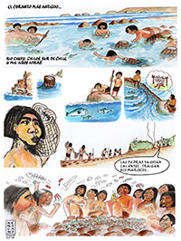

El sitio Chepu 005
Chepu-005 es un sitio arqueológico ubicado cerca de la desembocadura del río Chepu, al sur de Ancud en la costa occidental de la Isla Grande de Chiloé. Posee una larga historia de ocupación que comienza hace alrededor de 6.300 años, y termina probablemente en los últimos 5 siglos. Así, corresponde en parte a los primeros ocupantes de la zona, quienes probablemente llegaron en embarcaciones a la isla.
Los materiales encontrados en Chepu-005 fueron herramientas de piedra tallada, y algunas en huesos de mamíferos y aves. También se hallaron evidencias de recursos alimenticios: huesos de mamíferos, aves, peces y conchas. Se trataba de grupos altamente móviles que vivían principalmente de recursos del mar, como el loco, las machas, el pejerrey y el róbalo, pero también aprovechaban los recursos que el bosque proveía, como la madera, ciertas rocas y animales como el pudú. La navegación les permitió aprovechar recursos muy distantes, como la obsidiana (vidrio volcánico) procedente del volcán Chaitén.

Descargar (1.22 MB)
{kind=link}